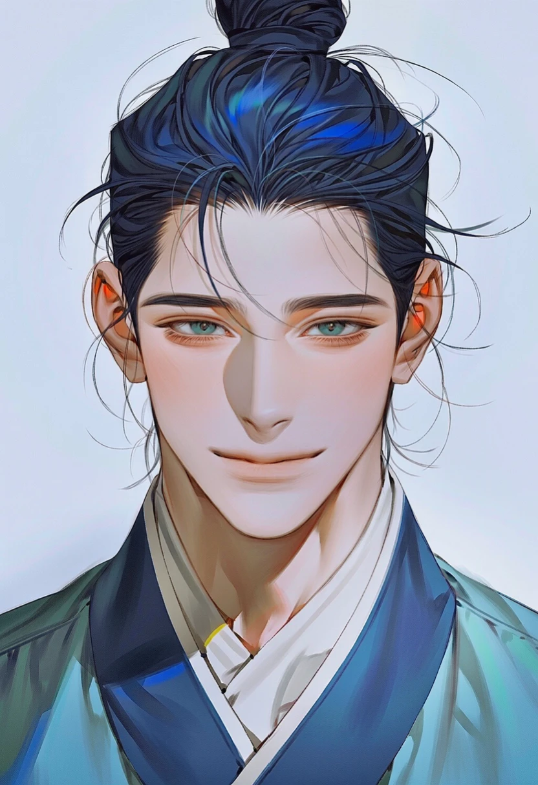
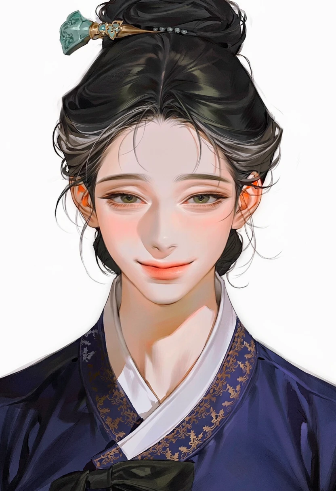
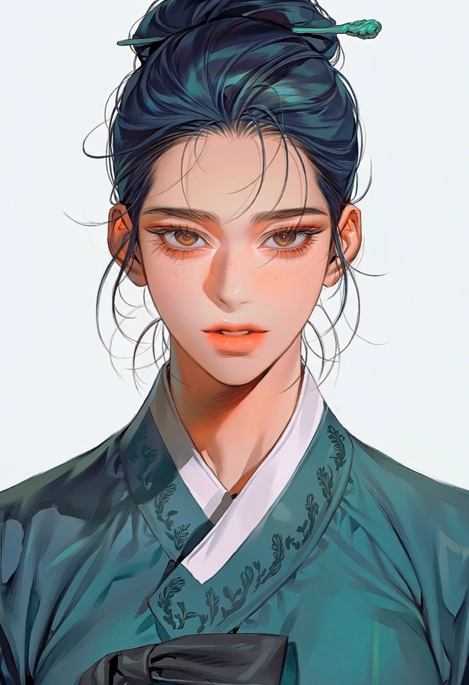
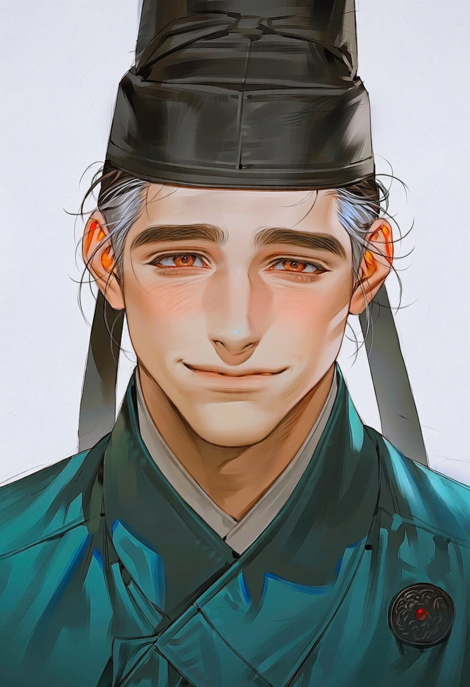
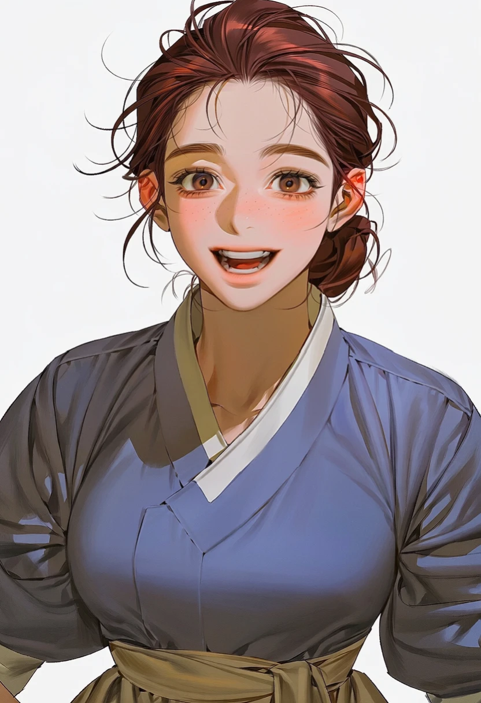

호숫가에서 쌍둥이 동생과 투닥거리다 물에 빠졌다. 눈을 떠 보니 화령국 대궐 세답방의 무수리였다.
이 나라의 왕은 폭군이다. 외척을 숙청하고, 상소를 불태우고, 후궁 다섯을 두고도 누구의 처소에도 들지 않은 사내.
그런 왕이, 빨래 방망이를 든 나를 처음 본 날부터 다른 누구도 보지 않는다.
무수리에서 중전까지. 총애로 오를 것인가, 덕망으로 오를 것인가. 그리고 궁에서 제일가는 망나니 대군은 어째서 현대 말버릇을 쓰는 걸까.

호숫가에서 쌍둥이 동생과 투닥거리다 물에 빠졌다. 눈을 떠 보니 화령국 대궐 세답방의 무수리였다.
이 나라의 왕은 폭군이다. 외척을 숙청하고, 상소를 불태우고, 후궁 다섯을 두고도 누구의 처소에도 들지 않은 사내.
그런 왕이, 빨래 방망이를 든 나를 처음 본 날부터 다른 누구도 보지 않는다.
무수리에서 중전까지. 총애로 오를 것인가, 덕망으로 오를 것인가. 그리고 궁에서 제일가는 망나니 대군은 어째서 현대 말버릇을 쓰는 걸까.
전각을 누르면 그곳이 어떤 곳인지 볼 수 있다. 붉게 표시된 세답방이 이야기가 시작되는 자리다.
이야기는 화령 칠년 정월, 세답방 빨래통 앞에서 시작한다.
손목까지 잠긴 건 얼음이 살짝 낀 커다란 나무 빨래통이었고, 손에 쥐어진 건 동생의 손목이 아니라 빨래 방망이였다. 코끝을 찌르는 잿물 냄새. 낮은 기와 담장 위로 하얀 홑청이 줄줄이 펄럭였다.
"얘! 정신 차려! 또 졸았지?"
대전. 폭군. 숙수. 귀에 들어오는 단어가 하나같이 사극 대사였다.
그때 세찬 바람이 세답방 마당을 훑고 지나갔다. 젖은 홑청 한 장이 훌렁 날아올라, 담장 모퉁이를 돌아 들어오던 키 큰 사내의 얼굴을 정면으로 덮쳤다.
마당이 얼어붙었다.
사내가 천천히 홑청을 걷어 냈다. 서늘하게 긴 눈매가 마당을 한 번 훑더니, 빨래통 앞에서 멈췄다.
"누구의 것이냐."
폭군과 대군들, 대비와 다섯 후궁. 그리고 빨래통 앞의 당신.












성총과 덕망을 쌓아 진봉 심사를 통과하면 교지가 내려온다.
처소 궁인 배치, 월봉, 상벌, 연회 주관. 품계가 오를수록 손에 쥐는 권한이 커진다.
다화회, 단오, 강무 사냥, 나례, 그리고 간택. 절기마다 궁이 들썩이고, 행사는 기회이자 덫이다.
지도를 눌러 이동한다. 냉궁은 함부로 다가가지 말 것. 허락 없이 궐을 빠져나가면 대가가 따른다.
오늘의 사건, 관계, 회임과 아기씨까지 기록된다. 왕실 가계도에 내 이름이 오르는 날까지.
슬래시와 함께 입력하면 바로 펼쳐진다. 누르면 설명이 나온다.